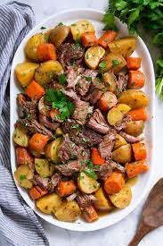

Pot Roast

This is an easy oven-baked pot roast with vegetables. The aroma
will make you hungry while this delicious roast bakes.
Fall apart, tender Pot Roast smothered in a delicious gravy
with potatoes and carrots. A warm and hearty dinner recipe…
this beef roast is a perfect complete meal you
can prepare with minimum effort.
Ingredients needed for this dish
- 3 potatoes, peeled and cut into 6 pieces
- 1 large onion, cut into 8 pieces
- 2 carrots, cut into 1-inch pieces
- 2 stalks celery, cut into 1-inch pieces
- 3 cups water
- salt and ground black pepper to taste
- 1 pinch garlic salt, or to taste
- ½ cup water
- 3 tablespoons cornstarch
- ½ teaspoon browning sauce (Optional)
Preparation instructions
- Preheat oven to 300 degrees F (150 degrees C).
- Place roast in a large baking pan; arrange potatoes,
onion, carrots, and celery around roast. Pour 3 cups
water into baking pan. Season roast with salt, pepper,
and garlic salt. Cover pan with aluminum foil.
- Bake in the preheated oven until roast is browned and
cooked through, about 3 hours. An instant-read
thermometer inserted in the thickest part of the roast
should read 145 degrees F (65 degrees C). Transfer
roast to an oven-safe platter. Remove vegetables using
a slotted spoon and arrange around roast.
- Reduce oven temperature to 200 degrees F (95 degrees C).
Place platter with roast and vegetables in the oven to
keep warm.
- Pour the remaining juices from the baking pan into a
saucepan; bring to a boil. Stir 1/2 cup water and
cornstarch together in a bowl until smooth; pour into
boiling pan juices. Reduce heat to medium; cook, stirring
constantly, until gravy is thick, about 5 minutes; season
with salt and pepper. Stir in browning sauce.